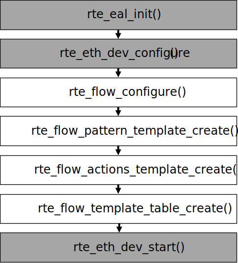
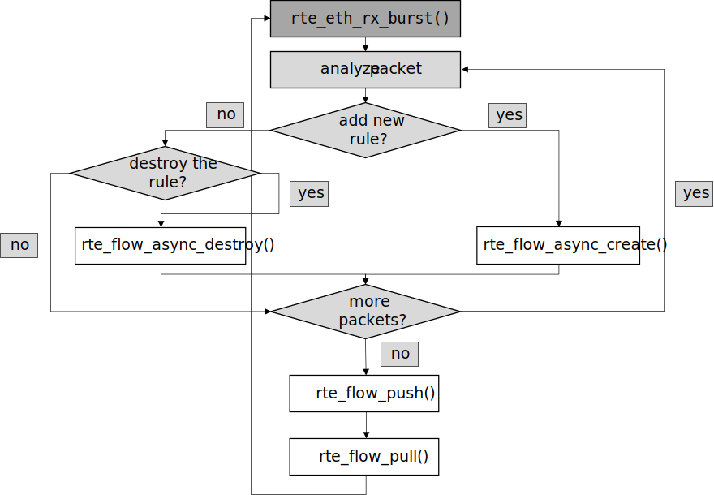

This API provides a generic means to configure hardware to match specific
traffic, alter its fate and query related counters according to any
number of user-defined rules.
It is named rte_flow after the prefix used for all its symbols, and is
defined in rte_flow.h.
Matching can be performed on packet data (protocol headers, payload) and
properties (e.g. associated physical port, virtual device function ID).
Possible operations include dropping traffic, diverting it to specific
queues, to virtual/physical device functions or ports, performing tunnel
offloads, adding marks and so on.
15.2. Flow rule
15.2.1. Description
A flow rule is the combination of attributes with a matching pattern and a
list of actions. Flow rules form the basis of this API.
Flow rules can have several distinct actions (such as counting,
encapsulating, decapsulating before redirecting packets to a particular
queue, etc.), instead of relying on several rules to achieve this and having
applications deal with hardware implementation details regarding their
order.
Support for different priority levels on a rule basis is provided, for
example in order to force a more specific rule to come before a more generic
one for packets matched by both. However hardware support for more than a
single priority level cannot be guaranteed. When supported, the number of
available priority levels is usually low, which is why they can also be
implemented in software by PMDs (e.g. missing priority levels may be
emulated by reordering rules).
In order to remain as hardware-agnostic as possible, by default all rules
are considered to have the same priority, which means that the order between
overlapping rules (when a packet is matched by several filters) is
undefined.
PMDs may refuse to create overlapping rules at a given priority level when
they can be detected (e.g. if a pattern matches an existing filter).
Thus predictable results for a given priority level can only be achieved
with non-overlapping rules, using perfect matching on all protocol layers.
Flow rules can also be grouped, the flow rule priority is specific to the
group they belong to. All flow rules in a given group are thus processed within
the context of that group. Groups are not linked by default, so the logical
hierarchy of groups must be explicitly defined by flow rules themselves in each
group using the JUMP action to define the next group to redirect to. Only flow
rules defined in the default group 0 are guaranteed to be matched against. This
makes group 0 the origin of any group hierarchy defined by an application.
Support for multiple actions per rule may be implemented internally on top
of non-default hardware priorities. As a result, both features may not be
simultaneously available to applications.
Considering that allowed pattern/actions combinations cannot be known in
advance and would result in an impractically large number of capabilities to
expose, a method is provided to validate a given rule from the current
device configuration state.
This enables applications to check if the rule types they need is supported
at initialization time, before starting their data path. This method can be
used anytime, its only requirement being that the resources needed by a rule
should exist (e.g. a target RX queue should be configured first).
Each defined rule is associated with an opaque handle managed by the PMD,
applications are responsible for keeping it. These can be used for queries
and rules management, such as retrieving counters or other data and
destroying them.
To avoid resource leaks on the PMD side, handles must be explicitly
destroyed by the application before releasing associated resources such as
queues and ports.
Warning
The following description of rule persistence is an experimental behavior
that may change without a prior notice.
When the device is stopped, its rules do not process the traffic.
In particular, transfer rules created using some device
stop affecting the traffic even if they refer to different ports.
If RTE_ETH_DEV_CAPA_FLOW_RULE_KEEP is not advertised,
rules cannot be created until the device is started for the first time
and cannot be kept when the device is stopped.
However, PMD also does not flush them automatically on stop,
so the application must call rte_flow_flush() or rte_flow_destroy()
before stopping the device to ensure no rules remain.
If RTE_ETH_DEV_CAPA_FLOW_RULE_KEEP is advertised, this means
the PMD can keep at least some rules across the device stop and start.
However, rte_eth_dev_configure() may fail if any rules remain,
so the application must flush them before attempting a reconfiguration.
Keeping may be unsupported for some types of rule items and actions,
as well as depending on the value of flow attributes transfer bit.
A combination of a single an item or action type
and a value of the transfer bit is called a rule feature.
For example: a COUNT action with the transfer bit set.
To test if rules with a particular feature are kept, the application must try
to create a valid rule using this feature when the device is not started
(either before the first start or after a stop).
If it fails with an error of type RTE_FLOW_ERROR_TYPE_STATE,
all rules using this feature must be flushed by the application
before stopping the device.
If it succeeds, such rules will be kept when the device is stopped,
provided they do not use other features that are not supported.
Rules that are created when the device is stopped, including the rules
created for the test, will be kept after the device is started.
The following sections cover:
Attributes (represented by structrte_flow_attr): properties of a
flow rule such as its direction (ingress or egress) and priority.
Pattern item (represented by structrte_flow_item): part of a
matching pattern that either matches specific packet data or traffic
properties. It can also describe properties of the pattern itself, such as
inverted matching.
Matching pattern: traffic properties to look for, a combination of any
number of items.
Actions (represented by structrte_flow_action): operations to
perform whenever a packet is matched by a pattern.
15.2.2. Attributes
15.2.2.1. Attribute: Group
Flow rules can be grouped by assigning them a common group number. Groups
allow a logical hierarchy of flow rule groups (tables) to be defined. These
groups can be supported virtually in the PMD or in the physical device.
Group 0 is the default group and is the only group that
flows are guaranteed to be matched against.
All subsequent groups can only be reached by using a JUMP action
from a matched flow rule.
Although optional, applications are encouraged to group similar rules as
much as possible to fully take advantage of hardware capabilities
(e.g. optimized matching) and work around limitations (e.g. a single pattern
type possibly allowed in a given group), while being aware that the groups’
hierarchies must be programmed explicitly.
Note that support for more than a single group is not guaranteed.
15.2.2.2. Attribute: Priority
A priority level can be assigned to a flow rule, lower values
denote higher priority, with 0 as the maximum.
Priority levels are arbitrary and up to the application, they do
not need to be contiguous nor start from 0, however the maximum number
varies between devices and may be affected by existing flow rules.
A flow which matches multiple rules in the same group will always be matched by
the rule with the highest priority in that group.
If a packet is matched by several rules of a given group for a given
priority level, the outcome is undefined. It can take any path, may be
duplicated or even cause unrecoverable errors.
Note that support for more than a single priority level is not guaranteed.
15.2.2.3. Attribute: Traffic direction
Unless Attribute: Transfer is specified, flow rule patterns apply
to inbound and / or outbound traffic. With this respect, ingress
and egress respectively stand for inbound and outbound
based on the standpoint of the application creating a flow rule.
Several pattern items and actions are valid and can be used in both
directions. At least one direction must be specified.
Specifying both directions at once for a given rule is not recommended but
may be valid in a few cases.
15.2.2.4. Attribute: Transfer
Instead of simply matching the properties of traffic as it would appear on a
given DPDK port ID, enabling this attribute transfers a flow rule to the
lowest possible level of any device endpoints found in the pattern.
When supported, this effectively enables an application to reroute traffic
not necessarily intended for it (e.g. coming from or addressed to different
physical ports, VFs or applications) at the device level.
Matching protocol headers and packet data, usually associated with a
specification structure. These must be stacked in the same order as the
protocol layers to match inside packets, starting from the lowest.
Matching meta-data or affecting pattern processing, often without a
specification structure. Since they do not match packet contents, their
position in the list is usually not relevant.
Item specification structures are used to match specific values among
protocol fields (or item properties). Documentation describes for each item
whether they are associated with one and their type name if so.
Up to three structures of the same type can be set for a given item:
spec: values to match (e.g. a given IPv4 address).
last: upper bound for an inclusive range with corresponding fields in
spec.
mask: bit-mask applied to both spec and last whose purpose is
to distinguish the values to take into account and/or partially mask them
out (e.g. in order to match an IPv4 address prefix).
Usage restrictions and expected behavior:
Setting either mask or last without spec is an error.
Field values in last which are either 0 or equal to the corresponding
values in spec are ignored; they do not generate a range. Nonzero
values lower than those in spec are not supported.
Setting spec and optionally last without mask causes the PMD
to use the default mask defined for that item (defined as
rte_flow_item_{name}_mask constants).
Not setting any of them (assuming item type allows it) is equivalent to
providing an empty (zeroed) mask for broad (nonspecific) matching.
mask is a simple bit-mask applied before interpreting the contents of
spec and last, which may yield unexpected results if not used
carefully. For example, if for an IPv4 address field, spec provides
10.1.2.3, last provides 10.3.4.5 and mask provides
255.255.0.0, the effective range becomes 10.1.0.0 to 10.3.255.255.
Example of an item specification matching an Ethernet header:
Table 15.1 Ethernet item
Field
Subfield
Value
spec
src
00:00:01:02:03:04
dst
00:00:2a:66:00:01
type
0x22aa
last
unspecified
mask
src
00:00:ff:ff:ff:00
dst
00:00:00:00:00:ff
type
0x0000
Non-masked bits stand for any value (shown as ? below), Ethernet headers
with the following properties are thus matched:
src: ??:??:01:02:03:??
dst: ??:??:??:??:??:01
type: 0x????
15.2.4. Matching pattern
A pattern is formed by stacking items starting from the lowest protocol
layer to match. This stacking restriction does not apply to meta items which
can be placed anywhere in the stack without affecting the meaning of the
resulting pattern.
Patterns are terminated by END items.
Examples:
Table 15.2 TCPv4 as L4
Index
Item
0
Ethernet
1
IPv4
2
TCP
3
END
Table 15.3 TCPv6 in VXLAN
Index
Item
0
Ethernet
1
IPv4
2
UDP
3
VXLAN
4
Ethernet
5
IPv6
6
TCP
7
END
Table 15.4 TCPv4 as L4 with meta items
Index
Item
0
VOID
1
Ethernet
2
VOID
3
IPv4
4
TCP
5
VOID
6
VOID
7
END
The above example shows how meta items do not affect packet data matching
items, as long as those remain stacked properly. The resulting matching
pattern is identical to “TCPv4 as L4”.
Table 15.5 UDPv6 anywhere
Index
Item
0
IPv6
1
UDP
2
END
If supported by the PMD, omitting one or several protocol layers at the
bottom of the stack as in the above example (missing an Ethernet
specification) enables looking up anywhere in packets.
It is unspecified whether the payload of supported encapsulations
(e.g. VXLAN payload) is matched by such a pattern, which may apply to inner,
outer or both packets.
Table 15.6 Invalid, missing L3
Index
Item
0
Ethernet
1
UDP
2
END
The above pattern is invalid due to a missing L3 specification between L2
(Ethernet) and L4 (UDP). Doing so is only allowed at the bottom and at the
top of the stack.
15.2.5. Meta item types
They match meta-data or affect pattern processing instead of matching packet
data directly, most of them do not need a specification structure. This
particularity allows them to be specified anywhere in the stack without
causing any side effect.
15.2.5.1. Item: END
End marker for item lists. Prevents further processing of items, thereby
ending the pattern.
Its numeric value is 0 for convenience.
PMD support is mandatory.
spec, last and mask are ignored.
Table 15.7 END
Field
Value
spec
ignored
last
ignored
mask
ignored
15.2.5.2. Item: VOID
Used as a placeholder for convenience. It is ignored and simply discarded by
PMDs.
PMD support is mandatory.
spec, last and mask are ignored.
Table 15.8 VOID
Field
Value
spec
ignored
last
ignored
mask
ignored
One usage example for this type is generating rules that share a common
prefix quickly without reallocating memory, only by updating item types:
Table 15.9 TCP, UDP or ICMP as L4
Index
Item
0
Ethernet
1
IPv4
2
UDP
VOID
VOID
3
VOID
TCP
VOID
4
VOID
VOID
ICMP
5
END
15.2.5.3. Item: INVERT
Inverted matching, i.e. process packets that do not match the pattern.
Matches traffic originating from (ingress) or going to (egress) a given DPDK
port ID.
Normally only supported if the port ID in question is known by the
underlying PMD and related to the device the flow rule is created against.
Default mask matches the specified DPDK port ID.
Table 15.12 PORT_ID
Field
Subfield
Value
spec
id
DPDK port ID
last
id
upper range value
mask
id
zeroed to match any port ID
15.2.5.5. Item: MARK
Matches an arbitrary integer value which was set using the MARK action in
a previously matched rule.
This item can only specified once as a match criteria as the MARK action can
only be specified once in a flow action.
Note the value of MARK field is arbitrary and application defined.
Depending on the underlying implementation the MARK item may be supported on
the physical device, with virtual groups in the PMD or not at all.
Default mask matches any integer value.
Table 15.13 MARK
Field
Subfield
Value
spec
id | integer value
last
id | upper range value
mask
id
zeroed to match any value
15.2.5.6. Item: TAG
Matches tag item set by other flows. Multiple tags are supported by specifying
index.
Default mask matches the specified tag value and index.
Table 15.14 TAG
Field
Subfield | Value
spec
data
32 bit flow tag value
index
index of flow tag
last
data
upper range value
index
field is ignored
mask
data
bit-mask applies to “spec” and “last”
index
field is ignored
15.2.5.7. Item: META
Matches 32 bit metadata item set.
On egress, metadata can be set either by mbuf metadata field with
RTE_MBUF_DYNFLAG_TX_METADATA flag or SET_META action. On ingress, SET_META
action sets metadata for a packet and the metadata will be reported via
metadata dynamic field of rte_mbuf with RTE_MBUF_DYNFLAG_RX_METADATA flag.
Default mask matches the specified Rx metadata value.
Table 15.15 META
Field
Subfield
Value
spec
data
32 bit metadata value
last
data
upper range value
mask
data
bit-mask applies to “spec” and “last”
15.2.6. Data matching item types
Most of these are basically protocol header definitions with associated
bit-masks. They must be specified (stacked) from lowest to highest protocol
layer to form a matching pattern.
15.2.6.1. Item: ANY
Matches any protocol in place of the current layer, a single ANY may also
stand for several protocol layers.
This is usually specified as the first pattern item when looking for a
protocol anywhere in a packet.
Default mask stands for any number of layers.
Table 15.16 ANY
Field
Subfield
Value
spec
num
number of layers covered
last
num
upper range value
mask
num
zeroed to cover any number of layers
Example for VXLAN TCP payload matching regardless of outer L3 (IPv4 or IPv6)
and L4 (UDP) both matched by the first ANY specification, and inner L3 (IPv4
or IPv6) matched by the second ANY specification:
Table 15.17 TCP in VXLAN with wildcards
Index
Item
Field
Subfield
Value
0
Ethernet
1
ANY
spec
num
2
2
VXLAN
3
Ethernet
4
ANY
spec
num
1
5
TCP
6
END
15.2.6.2. Item: RAW
Matches a byte string of a given length at a given offset.
Offset is either absolute (using the start of the packet) or relative to the
end of the previous matched item in the stack, in which case negative values
are allowed.
If search is enabled, offset is used as the starting point. The search area
can be delimited by setting limit to a nonzero value, which is the maximum
number of bytes after offset where the pattern may start.
Matching a zero-length pattern is allowed, doing so resets the relative
offset for subsequent items.
This type does not support ranges (last field).
Default mask matches all fields exactly.
Table 15.18 RAW
Field
Subfield
Value
spec
relative
look for pattern after the previous item
search
search pattern from offset (see also limit)
reserved
reserved, must be set to zero
offset
absolute or relative offset for pattern
limit
search area limit for start of pattern
length
pattern length
pattern
byte string to look for
last
if specified, either all 0 or with the same values as spec
mask
bit-mask applied to spec values with usual behavior
Example pattern looking for several strings at various offsets of a UDP
payload, using combined RAW items:
Table 15.19 UDP payload matching
Index
Item
Field
Subfield
Value
0
Ethernet
1
IPv4
2
UDP
3
RAW
spec
relative
1
search
1
offset
10
limit
0
length
3
pattern
“foo”
4
RAW
spec
relative
1
search
0
offset
20
limit
0
length
3
pattern
“bar”
5
RAW
spec
relative
1
search
0
offset
-29
limit
0
length
3
pattern
“baz”
6
END
This translates to:
Locate “foo” at least 10 bytes deep inside UDP payload.
Locate “bar” after “foo” plus 20 bytes.
Locate “baz” after “bar” minus 29 bytes.
Such a packet may be represented as follows (not to scale):
0 >= 10 B == 20 B
| |<--------->| |<--------->|
| | | | |
|-----|------|-----|-----|-----|-----|-----------|-----|------|
| ETH | IPv4 | UDP | ... | baz | foo | ......... | bar | .... |
|-----|------|-----|-----|-----|-----|-----------|-----|------|
| |
|<--------------------------->|
== 29 B
Note that matching subsequent pattern items would resume after “baz”, not
“bar” since matching is always performed after the previous item of the
stack.
15.2.6.3. Item: ETH
Matches an Ethernet header.
The type field either stands for “EtherType” or “TPID” when followed by
so-called layer 2.5 pattern items such as RTE_FLOW_ITEM_TYPE_VLAN. In
the latter case, type refers to that of the outer header, with the inner
EtherType/TPID provided by the subsequent pattern item. This is the same
order as on the wire.
If the type field contains a TPID value, then only tagged packets with the
specified TPID will match the pattern.
The field has_vlan can be used to match any type of tagged packets,
instead of using the type field.
If the type and has_vlan fields are not specified, then both tagged
and untagged packets will match the pattern.
hdr: header definition (rte_ether.h).
has_vlan: packet header contains at least one VLAN.
Default mask matches destination and source addresses only.
15.2.6.4. Item: VLAN
Matches an 802.1Q/ad VLAN tag.
The corresponding standard outer EtherType (TPID) values are
RTE_ETHER_TYPE_VLAN or RTE_ETHER_TYPE_QINQ. It can be overridden by the
preceding pattern item.
If a VLAN item is present in the pattern, then only tagged packets will
match the pattern.
The field has_more_vlan can be used to match any type of tagged packets,
instead of using the inner_typefield.
If the inner_type and has_more_vlan fields are not specified,
then any tagged packets will match the pattern.
hdr: header definition (rte_ether.h).
has_more_vlan: packet header contains at least one more VLAN, after this VLAN.
Default mask matches the VID part of TCI only (lower 12 bits).
15.2.6.5. Item: IPV4
Matches an IPv4 header.
Note: IPv4 options are handled by dedicated pattern items.
hdr: IPv4 header definition (rte_ip.h).
Default mask matches source and destination addresses only.
15.2.6.6. Item: IPV6
Matches an IPv6 header.
Dedicated flags indicate if header contains specific extension headers.
To match on packets containing a specific extension header, an application
should match on the dedicated flag set to 1.
To match on packets not containing a specific extension header, an application
should match on the dedicated flag clear to 0.
In case application doesn’t care about the existence of a specific extension
header, it should not specify the dedicated flag for matching.
Default mask matches hdr source and destination addresses only.
15.2.6.7. Item: ICMP
Matches an ICMP header.
hdr: ICMP header definition (rte_icmp.h).
Default mask matches ICMP type and code only.
15.2.6.8. Item: UDP
Matches a UDP header.
hdr: UDP header definition (rte_udp.h).
Default mask matches source and destination ports only.
15.2.6.9. Item: TCP
Matches a TCP header.
hdr: TCP header definition (rte_tcp.h).
Default mask matches source and destination ports only.
15.2.6.10. Item: SCTP
Matches a SCTP header.
hdr: SCTP header definition (rte_sctp.h).
Default mask matches source and destination ports only.
15.2.6.11. Item: VXLAN
Matches a VXLAN header (RFC 7348).
hdr: header definition (rte_vxlan.h).
Default mask matches VNI only.
15.2.6.12. Item: E_TAG
Matches an IEEE 802.1BR E-Tag header.
The corresponding standard outer EtherType (TPID) value is
RTE_ETHER_TYPE_ETAG. It can be overridden by the preceding pattern item.
epcp_edei_in_ecid_b: E-Tag control information (E-TCI), E-PCP (3b),
E-DEI (1b), ingress E-CID base (12b).
rsvd_grp_ecid_b: reserved (2b), GRP (2b), E-CID base (12b).
in_ecid_e: ingress E-CID ext.
ecid_e: E-CID ext.
inner_type: inner EtherType or TPID.
Default mask simultaneously matches GRP and E-CID base.
15.2.6.13. Item: NVGRE
Matches a NVGRE header (RFC 7637).
c_k_s_rsvd0_ver: checksum (1b), undefined (1b), key bit (1b),
sequence number (1b), reserved 0 (9b), version (3b). This field must have
value 0x2000 according to RFC 7637.
protocol: protocol type (0x6558).
tni: virtual subnet ID.
flow_id: flow ID.
Default mask matches TNI only.
15.2.6.14. Item: MPLS
Matches a MPLS header.
label_tc_s_ttl: label, TC, Bottom of Stack and TTL.
Default mask matches label only.
15.2.6.15. Item: GRE
Matches a GRE header.
c_rsvd0_ver: checksum, reserved 0 and version.
protocol: protocol type.
Default mask matches protocol only.
15.2.6.16. Item: GRE_KEY
This action is deprecated. Consider Item: GRE_OPTION.
Matches a GRE key field.
This should be preceded by item GRE.
Value to be matched is a big-endian 32 bit integer.
When this item present it implicitly match K bit in default mask as “1”
15.2.6.17. Item: GRE_OPTION
Matches a GRE optional fields (checksum/key/sequence).
This should be preceded by item GRE.
checksum: checksum.
key: key.
sequence: sequence.
The items in GRE_OPTION do not change bit flags(c_bit/k_bit/s_bit) in GRE
item. The bit flags need be set with GRE item by application. When the items
present, the corresponding bits in GRE spec and mask should be set “1” by
application, it means to match specified value of the fields. When the items
no present, but the corresponding bits in GRE spec and mask is “1”, it means
to match any value of the fields.
15.2.6.18. Item: FUZZY
Fuzzy pattern match, expect faster than default.
This is for device that support fuzzy match option. Usually a fuzzy match is
fast but the cost is accuracy. i.e. Signature Match only match pattern’s hash
value, but it is possible two different patterns have the same hash value.
Matching accuracy level can be configured by threshold. Driver can divide the
range of threshold and map to different accuracy levels that device support.
Threshold 0 means perfect match (no fuzziness), while threshold 0xffffffff
means fuzziest match.
Table 15.20 FUZZY
Field
Subfield
Value
spec
threshold
0 as perfect match, 0xffffffff as fuzziest match
last
threshold
upper range value
mask
threshold
bit-mask apply to “spec” and “last”
Usage example, fuzzy match a TCPv4 packets:
Table 15.21 Fuzzy matching
Index
Item
0
FUZZY
1
Ethernet
2
IPv4
3
TCP
4
END
15.2.6.19. Item: GTP, GTPC, GTPU
Matches a GTPv1 header.
Note: GTP, GTPC and GTPU use the same structure. GTPC and GTPU item
are defined for a user-friendly API when creating GTP-C and GTP-U
flow rules.
hdr: header definition (rte_gtp.h).
Default mask matches teid only.
15.2.6.20. Item: ESP
Matches an ESP header.
hdr: ESP header definition (rte_esp.h).
Default mask matches SPI only.
15.2.6.21. Item: GENEVE
Matches a GENEVE header.
ver_opt_len_o_c_rsvd0: version (2b), length of the options fields (6b),
OAM packet (1b), critical options present (1b), reserved 0 (6b).
protocol: protocol type.
vni: virtual network identifier.
rsvd1: reserved, normally 0x00.
Default mask matches VNI only.
15.2.6.22. Item: VXLAN-GPE
Matches a VXLAN-GPE header (draft-ietf-nvo3-vxlan-gpe-05).
hdr: header definition (rte_vxlan.h).
Default mask matches VNI only.
15.2.6.23. Item: ARP_ETH_IPV4
Matches an ARP header for Ethernet/IPv4.
hdr: header definition (rte_arp.h).
Default mask matches SHA, SPA, THA and TPA.
15.2.6.24. Item: IPV6_EXT
Matches the presence of any IPv6 extension header.
Matches a Internet Group Management Protocol (RFC 2236).
type: IGMP message type (Query/Report).
max_resp_time: max time allowed before sending report.
checksum: checksum, 1s complement of whole IGMP message.
group_addr: group address, for Query value will be 0.
Default mask matches group_addr.
15.2.6.41. Item: AH
Matches a IP Authentication Header (RFC 4302).
next_hdr: next payload after AH.
payload_len: total length of AH in 4B words.
reserved: reserved bits.
spi: security parameters index.
seq_num: counter value increased by 1 on each packet sent.
Default mask matches spi.
15.2.6.42. Item: HIGIG2
Matches a HIGIG2 header field. It is layer 2.5 protocol and used in
Broadcom switches.
Default mask matches classification and vlan.
15.2.6.43. Item: L2TPV3OIP
Matches a L2TPv3 over IP header.
session_id: L2TPv3 over IP session identifier.
Default mask matches session_id only.
15.2.6.44. Item: PFCP
Matches a PFCP Header.
s_field: S field.
msg_type: message type.
msg_len: message length.
seid: session endpoint identifier.
Default mask matches s_field and seid.
15.2.6.45. Item: ECPRI
Matches a eCPRI header.
hdr: eCPRI header definition (rte_ecpri.h).
Default mask matches nothing, for all eCPRI messages.
15.2.6.46. Item: PACKET_INTEGRITY_CHECKS
Matches packet integrity.
For some devices application needs to enable integration checks in HW
before using this item.
level: the encapsulation level that should be checked:
level==0 means the default PMD mode (can be inner most / outermost).
level==1 means outermost header.
level>1 means inner header. See also RSS level.
packet_ok: All HW packet integrity checks have passed based on the
topmost network layer. For example, for ICMP packet the topmost network
layer is L3 and for TCP or UDP packet the topmost network layer is L4.
l2_ok: all layer 2 HW integrity checks passed.
l3_ok: all layer 3 HW integrity checks passed.
l4_ok: all layer 4 HW integrity checks passed.
l2_crc_ok: layer 2 CRC check passed.
ipv4_csum_ok: IPv4 checksum check passed.
l4_csum_ok: layer 4 checksum check passed.
l3_len_ok: the layer 3 length is smaller than the frame length.
15.2.6.47. Item: CONNTRACK
Matches a conntrack state after conntrack action.
flags: conntrack packet state flags.
Default mask matches all state bits.
15.2.6.48. Item: PORT_REPRESENTOR
Matches traffic entering the embedded switch from the given ethdev.
Term ethdev and the concept of port representor are synonymous.
The represented port is an entity plugged to the embedded switch
at the opposite end of the “wire” leading to the ethdev.
.--------------------.
| PORT_REPRESENTOR | Ethdev (Application Port Referred to by its ID)
'--------------------'
||
\/
.----------------.
| Logical Port |
'----------------'
||
||
||
\/
.----------.
| Switch |
'----------'
:
:
:
:
.----------------.
| Logical Port |
'----------------'
:
:
.--------------------.
| REPRESENTED_PORT | Net / Guest / Another Ethdev (Same Application)
'--------------------'
Matches traffic entering the embedded switch from
the entity represented by the given ethdev.
Term ethdev and the concept of port representor are synonymous.
The represented port is an entity plugged to the embedded switch
at the opposite end of the “wire” leading to the ethdev.
.--------------------.
| PORT_REPRESENTOR | Ethdev (Application Port Referred to by its ID)
'--------------------'
:
:
.----------------.
| Logical Port |
'----------------'
:
:
:
:
.----------.
| Switch |
'----------'
/\
||
||
||
.----------------.
| Logical Port |
'----------------'
/\
||
.--------------------.
| REPRESENTED_PORT | Net / Guest / Another Ethdev (Same Application)
'--------------------'
Matches on the aggregated port of the received packet.
In case of multiple aggregated ports, the affinity numbering starts from 1.
affinity: Aggregated affinity.
15.2.6.52. Item: FLEX
Matches with the custom network protocol header that was created
using rte_flow_flex_item_create() API. The application describes
the desired header structure, defines the header fields attributes
and header relations with preceding and following protocols and
configures the ethernet devices accordingly via
rte_flow_flex_item_create() routine.
handle: the flex item handle returned by the PMD on successful
rte_flow_flex_item_create() call, mask for this field is ignored.
length: match pattern length in bytes. If the length does not cover
all fields defined in item configuration, the pattern spec and mask are
considered by the driver as padded with trailing zeroes till the full
configured item pattern length.
pattern: pattern to match. The pattern is concatenation of bit fields
configured at item creation. At configuration the fields are presented
by sample_data array. The order of the bitfields is defined by the order
of sample_data elements. The width of each bitfield is defined by the width
specified in the corresponding sample_data element as well. If pattern
length is smaller than configured fields overall length it is considered
as padded with trailing zeroes up to full configured length, both for
value and mask.
15.2.6.53. Item: L2TPV2
Matches a L2TPv2 header.
hdr: header definition (rte_l2tpv2.h).
Default mask matches flags_version only.
15.2.6.54. Item: PPP
Matches a PPP header.
addr: PPP address.
ctrl: PPP control.
proto_id: PPP protocol identifier.
Default mask matches addr, ctrl, proto_id.
15.2.6.55. Item: METER_COLOR
Matches Color Marker set by a Meter.
color: Metering color marker.
15.2.6.56. Item: QUOTA
Matches flow quota state set by quota action.
state: Flow quota state
15.2.6.57. Item: IB_BTH
Matches an InfiniBand base transport header in RoCE packet.
hdr: InfiniBand base transport header definition (rte_ib.h).
15.2.6.58. Item: PTYPE
Matches the packet type as defined in rte_mbuf_ptype.
packet_type: L2/L3/L4 and tunnel information.
15.2.7. Actions
Each possible action is represented by a type.
An action can have an associated configuration object.
Several actions combined in a list can be assigned
to a flow rule and are performed in order.
They fall in three categories:
Actions that modify the fate of matching traffic, for instance by dropping
or assigning it a specific destination.
Actions that modify matching traffic contents or its properties. This
includes adding/removing encapsulation, encryption, compression and marks.
Actions related to the flow rule itself, such as updating counters or
making it non-terminating.
Flow rules being terminating by default, not specifying any action of the
fate kind results in undefined behavior. This applies to both ingress and
egress.
PASSTHRU, when supported, makes a flow rule non-terminating.
Like matching patterns, action lists are terminated by END items.
Example of action that redirects packets to queue index 10:
Table 15.23 Queue action
Field
Value
index
10
Actions are performed in list order:
Table 15.24 Count then drop
Index
Action
0
COUNT
1
DROP
2
END
Table 15.25 Mark, count then redirect
Index
Action
Field
Value
0
MARK
mark
0x2a
1
COUNT
id
0
2
QUEUE
queue
10
3
END
Table 15.26 Redirect to queue 5
Index
Action
Field
Value
0
DROP
1
QUEUE
queue
5
2
END
In the above example, while DROP and QUEUE must be performed in order, both
have to happen before reaching END. Only QUEUE has a visible effect.
Note that such a list may be thought as ambiguous and rejected on that
basis.
Table 15.27 Redirect to queues 5 and 3
Index
Action
Field
Value
0
QUEUE
queue
5
1
VOID
2
QUEUE
queue
3
3
END
As previously described, all actions must be taken into account. This
effectively duplicates traffic to both queues. The above example also shows
that VOID is ignored.
15.2.8. Action types
Common action types are described in this section.
15.2.8.1. Action: END
End marker for action lists. Prevents further processing of actions, thereby
ending the list.
Its numeric value is 0 for convenience.
PMD support is mandatory.
No configurable properties.
Table 15.28 END
Field
no properties
15.2.8.2. Action: VOID
Used as a placeholder for convenience. It is ignored and simply discarded by
PMDs.
PMD support is mandatory.
No configurable properties.
Table 15.29 VOID
Field
no properties
15.2.8.3. Action: PASSTHRU
Leaves traffic up for additional processing by subsequent flow rules; makes
a flow rule non-terminating.
No configurable properties.
Table 15.30 PASSTHRU
Field
no properties
Example to copy a packet to a queue and continue processing by subsequent
flow rules:
Table 15.31 Copy to queue 8
Index
Action
Field
Value
0
PASSTHRU
1
QUEUE
queue
8
2
END
15.2.8.4. Action: JUMP
Redirects packets to a group on the current device.
In a hierarchy of groups, which can be used to represent physical or logical
flow group/tables on the device, this action redirects the matched flow to
the specified group on that device.
If a matched flow is redirected to a table which doesn’t contain a matching
rule for that flow, then the behavior is undefined and the resulting behavior
is up to the specific device. Best practice when using groups would be to define
a default flow rule for each group which a defines the default actions in that
group so a consistent behavior is defined.
Defining an action for a matched flow in a group to jump to a group which is
higher in the group hierarchy may not be supported by physical devices,
depending on how groups are mapped to the physical devices. In the
definitions of jump actions, applications should be aware that it may be
possible to define flow rules which trigger an undefined behavior causing
flows to loop between groups.
Table 15.32 JUMP
Field
Value
group
Group to redirect packets to
15.2.8.5. Action: MARK
Attaches an integer value to packets and sets RTE_MBUF_F_RX_FDIR and
RTE_MBUF_F_RX_FDIR_ID mbuf flags.
This value is arbitrary and application-defined. Maximum allowed value
depends on the underlying implementation. It is returned in the
hash.fdir.hi mbuf field.
Table 15.33 MARK
Field
Value
id
integer value to return with packets
15.2.8.6. Action: FLAG
Flags packets. Similar to Action: MARK without a specific value; only
sets the RTE_MBUF_F_RX_FDIR mbuf flag.
No configurable properties.
Table 15.34 FLAG
Field
no properties
15.2.8.7. Action: QUEUE
Assigns packets to a given queue index.
Table 15.35 QUEUE
Field
Value
index
queue index to use
15.2.8.8. Action: DROP
Drop packets.
No configurable properties.
Table 15.36 DROP
Field
no properties
15.2.8.9. Action: SKIP_CMAN
Skip congestion management on received packets.
Using rte_eth_cman_config_set(),
an application can configure ethdev Rx queue’s congestion mechanism.
Once applied, packets congestion configuration is bypassed
on that particular ethdev Rx queue for all packets directed to that queue.
Table 15.37 SKIP_CMAN
Field
no properties
15.2.8.10. Action: COUNT
Adds a counter action to a matched flow.
If more than one count action is specified in a single flow rule, then each
action must specify a unique id.
Counters can be retrieved and reset through rte_flow_query(), see
structrte_flow_query_count.
For ports within the same switch domain then the counter id namespace extends
to all ports within that switch domain.
Table 15.38 COUNT
Field
Value
id
counter id
Query structure to retrieve and reset flow rule counters:
Table 15.39 COUNT query
Field
I/O
Value
reset
in
reset counter after query
hits_set
out
hits field is set
bytes_set
out
bytes field is set
hits
out
number of hits for this rule
bytes
out
number of bytes through this rule
15.2.8.11. Action: RSS
Similar to QUEUE, except RSS is additionally performed on packets to spread
them among several queues according to the provided parameters.
Unlike global RSS settings used by other DPDK APIs, unsetting the types
field does not disable RSS in a flow rule. Doing so instead requests safe
unspecified “best-effort” settings from the underlying PMD, which depending
on the flow rule, may result in anything ranging from empty (single queue)
to all-inclusive RSS.
If non-applicable for matching packets RSS types are requested,
these RSS types are simply ignored. For example, it happens if:
Hashing of both TCP and UDP ports is requested
(only one can be present in a packet).
Requested RSS types contradict to flow rule pattern
(e.g. pattern has UDP item, but RSS types contain TCP).
If requested RSS hash types are not supported by the Ethernet device at all
(not reported in dev_info.flow_type_rss_offloads),
the flow creation will fail.
Note: RSS hash result is stored in the hash.rss mbuf field which
overlaps hash.fdir.lo. Since Action: MARK sets the hash.fdir.hi
field only, both can be requested simultaneously.
Also, regarding packet encapsulation level:
0 requests the default behavior. Depending on the packet type, it can
mean outermost, innermost, anything in between or even no RSS.
It basically stands for the innermost encapsulation level RSS can be
performed on according to PMD and device capabilities.
1 requests RSS to be performed on the outermost packet encapsulation
level.
2 and subsequent values request RSS to be performed on the specified
inner packet encapsulation level, from outermost to innermost (lower to
higher values).
Values other than 0 are not necessarily supported.
Requesting a specific RSS level on unrecognized traffic results in undefined
behavior. For predictable results, it is recommended to make the flow rule
pattern match packet headers up to the requested encapsulation level so that
only matching traffic goes through.
Directs matching traffic to a given virtual function of the current device.
Packets can be redirected to the VF they originate from,
instead of the specified one. This parameter may not be available and is
not guaranteed to work properly if the VF part is matched by a prior flow
rule or if packets are not addressed to a VF in the first place.
The metering and policing (MTR) object has to be first created using the
rte_mtr_create() API function. The ID of the MTR object is specified as
action parameter. More than one flow can use the same MTR object through
the meter action. The MTR object can be further updated or queried using
the rte_mtr* API.
Table 15.44 METER
Field
Value
mtr_id
MTR object ID
15.2.8.16. Action: SECURITY
Perform the security action on flows matched by the pattern items
according to the configuration of the security session.
This action modifies the payload of matched flows. For INLINE_CRYPTO, the
security protocol headers and IV are fully provided by the application as
specified in the flow pattern. The payload of matching packets is
encrypted on egress, and decrypted and authenticated on ingress.
For INLINE_PROTOCOL, the security protocol is fully offloaded to HW,
providing full encapsulation and decapsulation of packets in security
protocols. The flow pattern specifies both the outer security header fields
and the inner packet fields. The security session specified in the action
must match the pattern parameters.
The security session specified in the action must be created on the same
port as the flow action that is being specified.
The ingress/egress flow attribute should match that specified in the
security session if the security session supports the definition of the
direction.
Multiple flows can be configured to use the same security session.
Table 15.45 SECURITY
Field
Value
security_session
security session to apply
The following is an example of configuring IPsec inline using the
INLINE_CRYPTO security session:
The encryption algorithm, keys and salt are part of the opaque
rte_security_session. The SA is identified according to the IP and ESP
fields in the pattern items.
Performs a VXLAN encapsulation action by encapsulating the matched flow in the
VXLAN tunnel as defined in the``rte_flow_action_vxlan_encap`` flow items
definition.
This action modifies the payload of matched flows. The flow definition specified
in the rte_flow_action_tunnel_encap action structure must define a valid
VLXAN network overlay which conforms with RFC 7348 (Virtual eXtensible Local
Area Network (VXLAN): A Framework for Overlaying Virtualized Layer 2 Networks
over Layer 3 Networks). The pattern must be terminated with the
RTE_FLOW_ITEM_TYPE_END item type.
Table 15.55 VXLAN_ENCAP
Field
Value
definition
Tunnel end-point overlay definition
Table 15.56 IPv4 VxLAN flow pattern example.
Index
Item
0
Ethernet
1
IPv4
2
UDP
3
VXLAN
4
END
15.2.8.25. Action: VXLAN_DECAP
Performs a decapsulation action by stripping all headers of the VXLAN tunnel
network overlay from the matched flow.
The flow items pattern defined for the flow rule with which a VXLAN_DECAP
action is specified, must define a valid VXLAN tunnel as per RFC7348. If the
flow pattern does not specify a valid VXLAN tunnel then a
RTE_FLOW_ERROR_TYPE_ACTION error should be returned.
This action modifies the payload of matched flows.
15.2.8.26. Action: NVGRE_ENCAP
Performs a NVGRE encapsulation action by encapsulating the matched flow in the
NVGRE tunnel as defined in the``rte_flow_action_tunnel_encap`` flow item
definition.
This action modifies the payload of matched flows. The flow definition specified
in the rte_flow_action_tunnel_encap action structure must defined a valid
NVGRE network overlay which conforms with RFC 7637 (NVGRE: Network
Virtualization Using Generic Routing Encapsulation). The pattern must be
terminated with the RTE_FLOW_ITEM_TYPE_END item type.
Table 15.57 NVGRE_ENCAP
Field
Value
definition
NVGRE end-point overlay definition
Table 15.58 IPv4 NVGRE flow pattern example.
Index
Item
0
Ethernet
1
IPv4
2
NVGRE
3
END
15.2.8.27. Action: NVGRE_DECAP
Performs a decapsulation action by stripping all headers of the NVGRE tunnel
network overlay from the matched flow.
The flow items pattern defined for the flow rule with which a NVGRE_DECAP
action is specified, must define a valid NVGRE tunnel as per RFC7637. If the
flow pattern does not specify a valid NVGRE tunnel then a
RTE_FLOW_ERROR_TYPE_ACTION error should be returned.
This action modifies the payload of matched flows.
15.2.8.28. Action: RAW_ENCAP
Adds outer header whose template is provided in its data buffer,
as defined in the rte_flow_action_raw_encap definition.
This action modifies the payload of matched flows. The data supplied must
be a valid header, either holding layer 2 data in case of adding layer 2 after
decap layer 3 tunnel (for example MPLSoGRE) or complete tunnel definition
starting from layer 2 and moving to the tunnel item itself. When applied to
the original packet the resulting packet must be a valid packet.
Table 15.59 RAW_ENCAP
Field
Value
data
Encapsulation data
preserve
Bit-mask of data to preserve on output
size
Size of data and preserve
15.2.8.29. Action: RAW_DECAP
Remove outer header whose template is provided in its data buffer,
as defined in the rte_flow_action_raw_decap
This action modifies the payload of matched flows. The data supplied must
be a valid header, either holding layer 2 data in case of removing layer 2
before encapsulation of layer 3 tunnel (for example MPLSoGRE) or complete
tunnel definition starting from layer 2 and moving to the tunnel item itself.
When applied to the original packet the resulting packet must be a
valid packet.
Set a new IPv6 destination address in the outermost IPv6 header.
It must be used with a valid RTE_FLOW_ITEM_TYPE_IPV6 flow pattern item.
Otherwise, RTE_FLOW_ERROR_TYPE_ACTION error will be returned.
Table 15.64 SET_IPV6_DST
Field
Value
ipv6_addr
new IPv6 destination address
15.2.8.34. Action: IPV6_EXT_PUSH
Add an IPv6 extension into IPv6 header.
Its template is provided in its data buffer
with the specific type as defined in rte_flow_action_ipv6_ext_push.
This action modifies the payload of matched flows.
The data supplied must be a valid extension in the specified type,
it should be added the last one if preceding extension existed.
When applied to the original packet,
the resulting packet must be a valid packet.
15.2.8.35. Action: IPV6_EXT_REMOVE
Remove an IPv6 extension whose type is provided in
rte_flow_action_ipv6_ext_remove.
This action modifies the payload of matched flow
and the packet should be valid after removing.
Set a new source port number in the outermost TCP/UDP header.
It must be used with a valid RTE_FLOW_ITEM_TYPE_TCP or RTE_FLOW_ITEM_TYPE_UDP
flow pattern item. Otherwise, RTE_FLOW_ERROR_TYPE_ACTION error will be returned.
Set a new destination port number in the outermost TCP/UDP header.
It must be used with a valid RTE_FLOW_ITEM_TYPE_TCP or RTE_FLOW_ITEM_TYPE_UDP
flow pattern item. Otherwise, RTE_FLOW_ERROR_TYPE_ACTION error will be returned.
Table 15.66 SET_TP_DST
Field
Value
port | new TCP/UDP destination port
15.2.8.38. Action: MAC_SWAP
Swap the source and destination MAC addresses in the outermost Ethernet
header.
It must be used with a valid RTE_FLOW_ITEM_TYPE_ETH flow pattern item.
Otherwise, RTE_FLOW_ERROR_TYPE_ACTION error will be returned.
Metadata set by mbuf metadata field with RTE_MBUF_DYNFLAG_TX_METADATA flag on egress
will be overridden by this action. On ingress, the metadata will be carried by
metadata dynamic field of rte_mbuf which can be accessed by
RTE_FLOW_DYNF_METADATA(). RTE_MBUF_DYNFLAG_RX_METADATA flag will be set along
with the data.
The mbuf dynamic field must be registered by calling
rte_flow_dynf_metadata_register() prior to use SET_META action.
Altering partial bits is supported with mask. For bits which have never been
set, unpredictable value will be seen depending on driver implementation. For
loopback/hairpin packet, metadata set on Rx/Tx may or may not be propagated to
the other path depending on HW capability.
In hairpin case with Tx explicit flow mode, metadata could (not mandatory) be
used to connect the Rx and Tx flows if it can be propagated from Rx to Tx path.
It must be used with RTE_FLOW_ITEM_TYPE_IPV6 in pattern.
Otherwise, RTE_FLOW_ERROR_TYPE_ACTION error will be returned.
Table 15.75 SET_IPV6_DSCP
Field
Value
dscp
DSCP in low 6 bits, rest ignore
15.2.8.51. Action: AGE
Set ageing timeout configuration to a flow.
Event RTE_ETH_EVENT_FLOW_AGED will be reported if
timeout passed without any matching on the flow.
Table 15.76 AGE
Field
Value
timeout
24 bits timeout value
reserved
8 bits reserved, must be zero
context
user input flow context
Query structure to retrieve ageing status information of a
shared AGE action, or a flow rule using the AGE action:
Table 15.77 AGE query
Field
I/O
Value
aged
out
Aging timeout expired
sec_since_last_hit_valid
out
sec_since_last_hit value is valid
sec_since_last_hit
out
Seconds since last traffic hit
Update structure to modify the parameters of an indirect AGE action.
The update structure is used by rte_flow_action_handle_update() function.
Table 15.78 AGE update
Field
Value
reserved
6 bits reserved, must be zero
timeout_valid
1 bit, timeout value is valid
timeout
24 bits timeout value
touch
1 bit, touch the AGE action to set sec_since_last_hit 0
15.2.8.52. Action: SAMPLE
Adds a sample action to a matched flow.
The matching packets will be duplicated with the specified ratio and
applied with own set of actions with a fate action, the packets sampled
equals is ‘1/ratio’. All the packets continue to the target destination.
When the ratio is set to 1 then the packets will be 100% mirrored.
actions represent the different set of actions for the sampled or mirrored
packets, and must have a fate action.
Table 15.79 SAMPLE
Field
Value
ratio
32 bits sample ratio value
actions
sub-action list for sampling
15.2.8.53. Action: INDIRECT
Flow utilize indirect action by handle as returned from
rte_flow_action_handle_create().
The behaviour of the indirect action defined by action argument of type
structrte_flow_action passed to rte_flow_action_handle_create().
The indirect action can be used by a single flow or shared among multiple flows.
The indirect action can be in-place updated by rte_flow_action_handle_update()
without destroying flow and creating flow again. The fields that could be
updated depend on the type of the action and different for every type.
The indirect action specified data (e.g. counter) can be queried by
rte_flow_action_handle_query().
Warning
The following description of indirect action persistence
is an experimental behavior that may change without a prior notice.
If RTE_ETH_DEV_CAPA_FLOW_SHARED_OBJECT_KEEP is not advertised,
indirect actions cannot be created until the device is started for the first time
and cannot be kept when the device is stopped.
However, PMD also does not flush them automatically on stop,
so the application must call rte_flow_action_handle_destroy()
before stopping the device to ensure no indirect actions remain.
If RTE_ETH_DEV_CAPA_FLOW_SHARED_OBJECT_KEEP is advertised,
this means that the PMD can keep at least some indirect actions
across device stop and start.
However, rte_eth_dev_configure() may fail if any indirect actions remain,
so the application must destroy them before attempting a reconfiguration.
Keeping may be only supported for certain kinds of indirect actions.
A kind is a combination of an action type and a value of its transfer bit.
For example: an indirect counter with the transfer bit reset.
To test if a particular kind of indirect actions is kept,
the application must try to create a valid indirect action of that kind
when the device is not started (either before the first start of after a stop).
If it fails with an error of type RTE_FLOW_ERROR_TYPE_STATE,
application must destroy all indirect actions of this kind
before stopping the device.
If it succeeds, all indirect actions of the same kind are kept
when the device is stopped.
Indirect actions of a kept kind that are created when the device is stopped,
including the ones created for the test, will be kept after the device start.
Table 15.80 INDIRECT
Field
no properties
15.2.8.54. Action: INDIRECT_LIST
Indirect API creates a shared flow action with unique action handle.
Flow rules can access the shared flow action and resources related to
that action through the indirect action handle.
In addition, the API allows to update existing shared flow action configuration.
After the update completes, new action configuration
is available to all flows that reference that shared action.
Indirect actions list expands the indirect action API:
Indirect action list creates a handle for one or several
flow actions, while legacy indirect action handle references
single action only.
Input flow actions arranged in END terminated list.
Flow rule can provide rule specific configuration parameters to
existing shared handle.
Updates of flow rule specific configuration will not change the base
action configuration.
Base action configuration was set during the action creation.
Indirect action list handle defines 2 types of resources:
Mutable handle resource can be changed during handle lifespan.
Immutable handle resource value is set during handle creation
and cannot be changed.
There are 2 types of mutable indirect handle contexts:
Action mutable context is always shared between all flows
that referenced indirect actions list handle.
Action mutable context can be changed by explicit invocation
of indirect handle update function.
Flow mutable context is private to a flow.
Flow mutable context can be updated by indirect list handle
flow rule configuration.
Indirect action types - immutable, action / flow mutable, are mutually
exclusive and depend on the action definition.
If indirect list handle was created from a list of actions A1 / A2 … An / END
indirect list flow action can update Ai flow mutable context in the
action configuration parameter.
Indirect list action configuration is and array [C1, C2, .., Cn]
where Ci corresponds to Ai in the action handle source.
Ci configuration element points Ai flow mutable update, or it’s NULL
if Ai has no flow mutable update.
Indirect list action configuration is NULL if the action has no flow mutable updates.
Otherwise it points to an array of n flow mutable configuration pointers.
Template API:
Action template format:
template..indirect_listhandleHtmplconfCtmpl..
mask..indirect_listhandleHmaskconfCmask..
If Htmpl was masked (Hmask != 0), it will be fixed in that template.
Otherwise, indirect action value is set in a flow rule.
If Htmpl and Ctmpl[i] were masked (Hmask !=0 and Cmask[i] != 0),
Htmpl’s Ai action flow mutable context fill be updated to
Ctmpl[i] values and will be fixed in that template.
Flow rule format:
actions..indirect_listhandleHflowconfCflow..
If Htmpl was not masked in actions template, Hflow references an
action of the same type as Htmpl.
Cflow[i] updates handle’s Ai flow mutable configuration if
the Ci was not masked in action template.
Modify dst field according to op selected (set, addition,
subtraction) with width bits of data from src field.
Any arbitrary header field (as well as mark, metadata or tag values)
can be used as both source and destination fields as set by field.
The immediate value RTE_FLOW_FIELD_VALUE (or a pointer to it
RTE_FLOW_FIELD_POINTER) is allowed as a source only.
RTE_FLOW_FIELD_START is used to point to the beginning of a packet.
See enumrte_flow_field_id for the list of supported fields.
op selects the operation to perform on a destination field:
set copies the data from src field to dst field.
add adds together dst and src and stores the result into dst.
sub subtracts src from dst and stores the result into dst.
width defines a number of bits to use from src field.
level is used to access any packet field on any encapsulation level:
0 means the default behaviour. Depending on the packet type,
it can mean outermost, innermost or anything in between.
1 requests access to the outermost packet encapsulation level.
2 and subsequent values requests access to the specified packet
encapsulation level, from outermost to innermost (lower to higher values).
tag_index is the index of the header inside encapsulation level.
It is used to modify either VLAN or MPLS or TAG headers
which multiple of them might be supported in the same encapsulation level.
Note
For RTE_FLOW_FIELD_TAG type, the tag array was provided in level
field and it is still supported for backwards compatibility.
When tag_index is zero, the tag array is taken from level field.
type is used to specify (along with class_id) the Geneve option
which is being modified.
This field is relevant only for RTE_FLOW_FIELD_GENEVE_OPT_XXXX type.
class_id is used to specify (along with type) the Geneve option
which is being modified.
This field is relevant only for RTE_FLOW_FIELD_GENEVE_OPT_XXXX type.
flex_handle is used to specify the flex item pointer which is being
modified. flex_handle and level are mutually exclusive.
offset specifies the number of bits to skip from a field’s start.
That allows performing a partial copy of the needed part or to divide a big
packet field into multiple smaller fields. Alternatively, offset allows
going past the specified packet field boundary to copy a field to an
arbitrary place in a packet, essentially providing a way to copy any part of
a packet to any other part of it.
value sets an immediate value to be used as a source or points to a
location of the value in memory. It is used instead of level and offset
for RTE_FLOW_FIELD_VALUE and RTE_FLOW_FIELD_POINTER respectively.
The data in memory should be presented exactly in the same byte order and
length as in the relevant flow item, i.e. data for field with type
RTE_FLOW_FIELD_MAC_DST should follow the conventions of dst field
in rte_flow_item_eth structure, with type RTE_FLOW_FIELD_IPV6_SRC -
rte_flow_item_ipv6 conventions, and so on. If the field size is larger than
16 bytes the pattern can be provided as pointer only.
The bitfield extracted from the memory being applied as second operation
parameter is defined by action width and by the destination field offset.
Application should provide the data in immediate value memory (either as
buffer or by pointer) exactly as item field without any applied explicit offset,
and destination packet field (with specified width and bit offset) will be
replaced by immediate source bits from the same bit offset. For example,
to replace the third byte of MAC address with value 0x85, application should
specify destination width as 8, destination offset as 16, and provide immediate
value as sequence of bytes {xxx, xxx, 0x85, xxx, xxx, xxx}.
The RTE_FLOW_FIELD_GENEVE_OPT_DATA type supports modifying only one DW in
single action and align to 32 bits.
For example, for modifying 16 bits start from offset 24,
2 different actions should be prepared.
The first one includes offset=24 and width=8,
and the second one includes offset=32 and width=8.
Application should provide the data in immediate value memory only
for the single DW even though the offset is related to start of first DW.
For example, to replace the third byte of second DW in Geneve option data
with value 0x85, the application should specify destination width as 8,
destination offset as 48, and provide immediate value 0xXXXX85XX.
immediate value buffer (source field only, not
applicable to destination) for RTE_FLOW_FIELD_VALUE
field type
This field is only 16 bytes, maybe not big enough for
all NICs’ flex item
pvalue
pointer to immediate value data (source field only, not
applicable to destination) for RTE_FLOW_FIELD_POINTER
field type
15.2.8.56. Action: CONNTRACK
Create a conntrack (connection tracking) context with the provided information.
In stateful session like TCP, the conntrack action provides the ability to
examine every packet of this connection and associate the state to every
packet. It will help to realize the stateful offload of connections with little
software participation. For example, the packets with invalid state may be
handled by the software. The control packets could be handled in the hardware.
The software just need to query the state of a connection when needed, and then
decide how to handle the flow rules and conntrack context.
A conntrack context should be created via rte_flow_action_handle_create()
before using. Then the handle with INDIRECT type is used for a flow rule
creation. If a flow rule with an opposite direction needs to be created, the
rte_flow_action_handle_update() should be used to modify the direction.
Not all the fields of the structrte_flow_action_conntrack will be used
for a conntrack context creating, depending on the HW, and they should be
in host byte order. PMD should convert them into network byte order when
needed by the HW.
The structrte_flow_modify_conntrack should be used for an updating.
The current conntrack context information could be queried via the
rte_flow_action_handle_query() interface.
Table 15.84 CONNTRACK
Field
Value
peer_port
peer port number
is_original_dir
direction of this connection for creating flow rule
enable
enable the conntrack context
live_connection
one ack was seen for this connection
selective_ack
SACK enabled
challenge_ack_passed
a challenge ack has passed
last_direction
direction of the last passed packet
liberal_mode
only report state change
state
current state
max_ack_window
maximal window scaling factor
retransmission_limit
maximal retransmission times
original_dir
TCP parameters of the original direction
reply_dir
TCP parameters of the reply direction
last_window
window size of the last passed packet
last_seq
sequence number of the last passed packet
last_ack
acknowledgment number the last passed packet
last_end
sum of ack number and length of the last passed packet
Table 15.85 configuration parameters for each direction
Field
Value
scale
TCP window scaling factor
close_initiated
FIN sent from this direction
last_ack_seen
an ACK packet received
data_unacked
unacknowledged data for packets from this direction
sent_end
max{seq + len} seen in sent packets
reply_end
max{sack + max{win, 1}} seen in reply packets
max_win
max{max{win, 1}} + {sack - ack} seen in sent packets
max_ack
max{ack} + seen in sent packets
Table 15.86 update a conntrack context
Field
Value
new_ct
new conntrack information
direction
direction will be updated
state
other fields except direction will be updated
reserved
reserved bits
15.2.8.57. Action: METER_COLOR
Color the packet to reflect the meter color result.
The meter action must be configured before meter color action.
Meter color action is set to a color to reflect the meter color result.
Set the meter color in the mbuf to the selected color.
The meter color action output color is the output color of the packet,
which is set in the packet meta-data (i.e. struct rte_mbuf::sched::color)
Table 15.87 METER_COLOR
Field
Value
meter_color
Packet color
15.2.8.58. Action: PORT_REPRESENTOR
At embedded switch level, send matching traffic to the given ethdev.
Term ethdev and the concept of port representor are synonymous.
The represented port is an entity plugged to the embedded switch
at the opposite end of the “wire” leading to the ethdev.
.--------------------.
| PORT_REPRESENTOR | Ethdev (Application Port Referred to by its ID)
'--------------------'
/\
||
.----------------.
| Logical Port |
'----------------'
/\
||
||
||
.----------. .--------------------.
| Switch | <== | Matching Traffic |
'----------' '--------------------'
:
:
:
:
.----------------.
| Logical Port |
'----------------'
:
:
.--------------------.
| REPRESENTED_PORT | Net / Guest / Another Ethdev (Same Application)
'--------------------'
At embedded switch level, send matching traffic to
the entity represented by the given ethdev.
Term ethdev and the concept of port representor are synonymous.
The represented port is an entity plugged to the embedded switch
at the opposite end of the “wire” leading to the ethdev.
.--------------------.
| PORT_REPRESENTOR | Ethdev (Application Port Referred to by its ID)
'--------------------'
:
:
.----------------.
| Logical Port |
'----------------'
:
:
:
:
.----------. .--------------------.
| Switch | <== | Matching Traffic |
'----------' '--------------------'
||
||
||
\/
.----------------.
| Logical Port |
'----------------'
||
\/
.--------------------.
| REPRESENTED_PORT | Net / Guest / Another Ethdev (Same Application)
'--------------------'
Meters a packet stream and marks its packets with colors.
Unlike the METER action, policing is optional and may be
performed later with the help of the METER_COLOR item.
The profile and/or policy objects have to be created
using the rte_mtr_profile_add()/rte_mtr_policy_add() API.
Pointers to these objects are used as action parameters
and need to be retrieved using the rte_mtr_profile_get() API
and rte_mtr_policy_get() API respectively.
Table 15.89 METER_MARK
Field
Value
profile
Meter profile object
policy
Meter policy object
15.2.8.61. Action: QUOTA
Update quota value and set packet quota state.
If the quota value after update is non-negative,
the packet quota state is set to RTE_FLOW_QUOTA_STATE_PASS.
Otherwise, the packet quota state is set to RTE_FLOW_QUOTA_STATE_BLOCK.
The quota value is reduced according to mode setting.
Table 15.90 QUOTA
Field
Value
mode
Quota operational mode
quota
Quota value
Table 15.91 Quota update modes
Value
Description
RTE_FLOW_QUOTA_MODE_PACKET
Count packets
RTE_FLOW_QUOTA_MODE_L2 | Count packet bytes starting from L2
RTE_FLOW_QUOTA_MODE_L3 | Count packet bytes starting from L3
15.2.8.62. Action: SEND_TO_KERNEL
Send packets to the kernel, without going to userspace at all.
The packets will be received by the kernel driver sharing the same device
as the DPDK port on which this action is configured.
15.2.9. Negative types
All specified pattern items (enumrte_flow_item_type) and actions
(enumrte_flow_action_type) use positive identifiers.
The negative space is reserved for dynamic types generated by PMDs during
run-time. PMDs may encounter them as a result but must not accept negative
identifiers they are not aware of.
A method to generate them remains to be defined.
Application may use PMD dynamic items or actions in flow rules. In that case
size of configuration object in dynamic element must be a pointer size.
15.3. Rules management
A rather simple API with few functions is provided to fully manage flow
rules.
Each created flow rule is associated with an opaque, PMD-specific handle
pointer. The application is responsible for keeping it until the rule is
destroyed.
Flows rules are represented by structrte_flow objects.
15.3.1. Validation
Given that expressing a definite set of device capabilities is not
practical, a dedicated function is provided to check if a flow rule is
supported and can be created.
The flow rule is validated for correctness and whether it could be accepted
by the device given sufficient resources. The rule is checked against the
current device mode and queue configuration. The flow rule may also
optionally be validated against existing flow rules and device resources.
This function has no effect on the target device.
The returned value is guaranteed to remain valid only as long as no
successful calls to rte_flow_create() or rte_flow_destroy() are made
in the meantime and no device parameter affecting flow rules in any way are
modified, due to possible collisions or resource limitations (although in
such cases EINVAL should not be returned).
Arguments:
port_id: port identifier of Ethernet device.
attr: flow rule attributes.
pattern: pattern specification (list terminated by the END pattern
item).
actions: associated actions (list terminated by the END action).
error: perform verbose error reporting if not NULL. PMDs initialize
this structure in case of error only.
Return values:
0 if flow rule is valid and can be created. A negative errno value
otherwise (rte_errno is also set), the following errors are defined.
-ENOSYS: underlying device does not support this functionality.
-EINVAL: unknown or invalid rule specification.
-ENOTSUP: valid but unsupported rule specification (e.g. partial
bit-masks are unsupported).
EEXIST: collision with an existing rule. Only returned if device
supports flow rule collision checking and there was a flow rule
collision. Not receiving this return code is no guarantee that creating
the rule will not fail due to a collision.
ENOMEM: not enough memory to execute the function, or if the device
supports resource validation, resource limitation on the device.
-EBUSY: action cannot be performed due to busy device resources, may
succeed if the affected queues or even the entire port are in a stopped
state (see rte_eth_dev_rx_queue_stop() and rte_eth_dev_stop()).
15.3.2. Creation
Creating a flow rule is similar to validating one, except the rule is
actually created and a handle returned.
pattern: pattern specification (list terminated by the END pattern
item).
actions: associated actions (list terminated by the END action).
error: perform verbose error reporting if not NULL. PMDs initialize
this structure in case of error only.
Return values:
A valid handle in case of success, NULL otherwise and rte_errno is set
to the positive version of one of the error codes defined for
rte_flow_validate().
15.3.3. Destruction
Flow rules destruction is not automatic, and a queue or a port should not be
released if any are still attached to them. Applications must take care of
performing this step before releasing resources.
In the unlikely event of failure, handles are still considered destroyed and
no longer valid but the port must be assumed to be in an inconsistent state.
Arguments:
port_id: port identifier of Ethernet device.
error: perform verbose error reporting if not NULL. PMDs initialize
this structure in case of error only.
Return values:
0 on success, a negative errno value otherwise and rte_errno is set.
15.3.6. Query
Query an existing flow rule.
This function allows retrieving flow-specific data such as counters. Data
is gathered by special actions which must be present in the flow rule
definition.
action: action to query, this must match prototype from flow rule.
data: pointer to storage for the associated query data type.
error: perform verbose error reporting if not NULL. PMDs initialize
this structure in case of error only.
Return values:
0 on success, a negative errno value otherwise and rte_errno is set.
15.4. Flow engine configuration
Configure flow API management.
An application may provide some parameters at the initialization phase about
rules engine configuration and/or expected flow rules characteristics.
These parameters may be used by PMD to preallocate resources and configure NIC.
15.4.1. Configuration
This function performs the flow API engine configuration and allocates
requested resources beforehand to avoid costly allocations later.
Expected number of resources in an application allows PMD to prepare
and optimize NIC hardware configuration and memory layout in advance.
rte_flow_configure() must be called before any flow rule is created,
but after an Ethernet device is configured.
It also creates flow queues for asynchronous flow rules operations via
queue-based API, see Asynchronous operations section.
In an application, many flow rules share common group attributes, meaning they can be grouped and
classified together. A user can explicitly specify a set of actions performed on a packet when it
did not match any flows rules in a group using the following API:
For example, to configure a RTE_FLOW_TYPE_JUMP action as a miss action for ingress group 1:
structrte_flow_group_attrattr={.ingress=1};structrte_flow_actionact[]={/* Setting miss actions to jump to group 3 */[0]={.type=RTE_FLOW_ACTION_TYPE_JUMP,.conf=&(structrte_flow_action_jump){.group=3}},[1]={.type=RTE_FLOW_ACTION_TYPE_END},};structrte_flow_errorerr;rte_flow_group_set_miss_actions(port,1,&attr,act,&err);
15.4.3. Flow templates
Oftentimes in an application, many flow rules share a common structure
(the same pattern and/or action list) so they can be grouped and classified
together. This knowledge may be used as a source of optimization by a PMD/HW.
The flow rule creation is done by selecting a table, a pattern template
and an actions template (which are bound to the table), and setting unique
values for the items and actions. This API is not thread-safe.
15.4.3.1. Pattern templates
The pattern template defines a common pattern (the item mask) without values.
The mask value is used to select a field to match on, spec/last are ignored.
The pattern template may be used by multiple tables and must not be destroyed
until all these tables are destroyed first.
The concrete value to match on will be provided at the rule creation.
15.4.3.2. Actions templates
The actions template holds a list of action types to be used in flow rules.
The mask parameter allows specifying a shared constant value for every rule.
The actions template may be used by multiple tables and must not be destroyed
until all these tables are destroyed first.
For example, to create an actions template with the same Mark ID
but different Queue Index for every rule:
rte_flow_actions_template_attrattr={.ingress=1};structrte_flow_actionact[]={/* Mark ID is 4 for every rule, Queue Index is unique */[0]={.type=RTE_FLOW_ACTION_TYPE_MARK,.conf=&(structrte_flow_action_mark){.id=4}},[1]={.type=RTE_FLOW_ACTION_TYPE_QUEUE},[2]={.type=RTE_FLOW_ACTION_TYPE_END,},};structrte_flow_actionmsk[]={/* Assign to MARK mask any non-zero value to make it constant */[0]={.type=RTE_FLOW_ACTION_TYPE_MARK,.conf=&(structrte_flow_action_mark){.id=1}},[1]={.type=RTE_FLOW_ACTION_TYPE_QUEUE},[2]={.type=RTE_FLOW_ACTION_TYPE_END,},};structrte_flow_errorerr;structrte_flow_actions_template*actions_template=rte_flow_actions_template_create(port,&attr,&act,&msk,&err);
The concrete value for Queue Index will be provided at the rule creation.
15.4.3.3. Template table
A template table combines a number of pattern and actions templates along with
shared flow rule attributes (group ID, priority and traffic direction).
This way a PMD/HW can prepare all the resources needed for efficient flow rules
creation in the datapath. To avoid any hiccups due to memory reallocation,
the maximum number of flow rules is defined at table creation time.
Any flow rule creation beyond the maximum table size is rejected.
Application may create another table to accommodate more rules in this case.
Application can help optimizing underlayer resources and insertion rate
by specializing template table.
Specialization is done by providing hints
in the template table attribute specialize.
This attribute is not mandatory for driver to implement.
If a hint is not supported, it will be silently ignored,
and no special optimization is done.
If a table is specialized, the application should make sure the rules
comply with the table attribute.
The application functionality must not rely on the hints,
they are not replacing the matching criteria of flow rules.
15.5. Asynchronous operations
Flow rules management can be done via special lockless flow management queues.
Queue operations are asynchronous and not thread-safe.
Operations can thus be invoked by the app’s datapath,
packet processing can continue while queue operations are processed by NIC.
Number of flow queues is configured at initialization stage.
Operations can be postponed and pushed to NIC in batches.
Results pulling must be done on time to avoid queue overflows.
User data is returned as part of the result to identify an operation.
Flow handle is valid once the creation operation is enqueued and must be
destroyed even if the operation is not successful and the rule is not inserted.
Application must wait for the creation operation result before enqueueing
the deletion operation to make sure the creation is processed by NIC.
The asynchronous flow rule insertion logic can be broken into two phases.
Initialization stage as shown here:

Main loop as presented on a datapath application example:

15.5.1. Enqueue creation operation
Enqueueing a flow rule creation operation is similar to simple creation.
There is the postpone attribute in the queue operation attributes.
When it is set, multiple operations can be bulked together and not sent to HW
right away to save SW/HW interactions and prioritize throughput over latency.
The application must invoke this function to actually push all outstanding
operations to HW in this case.
15.5.10. Pull enqueued operations
Pulling asynchronous operations results.
The application must invoke this function in order to complete asynchronous
flow rule operations and to receive flow rule operations statuses.
Multiple outstanding operation results can be pulled simultaneously.
User data may be provided during a flow creation/destruction in order
to distinguish between multiple operations. User data is returned as part
of the result to provide a method to detect which operation is completed.
15.5.11. Calculate hash
Calculating hash of a packet in SW as it would be calculated in HW.
The application can use this function to calculate the hash of a given packet
as it would be calculated in the HW.
The general expectation for ingress traffic is that flow rules process it
first; the remaining unmatched or pass-through traffic usually ends up in a
queue (with or without RSS, locally or in some sub-device instance)
depending on the global configuration settings of a port.
While fine from a compatibility standpoint, this approach makes drivers more
complex as they have to check for possible side effects outside of this API
when creating or destroying flow rules. It results in a more limited set of
available rule types due to the way device resources are assigned (e.g. no
support for the RSS action even on capable hardware).
Given that nonspecific traffic can be handled by flow rules as well,
isolated mode is a means for applications to tell a driver that ingress on
the underlying port must be injected from the defined flow rules only; that
no default traffic is expected outside those rules.
This has the following benefits:
Applications get finer-grained control over the kind of traffic they want
to receive (no traffic by default).
More importantly they control at what point nonspecific traffic is handled
relative to other flow rules, by adjusting priority levels.
Drivers can assign more hardware resources to flow rules and expand the
set of supported rule types.
Because toggling isolated mode may cause profound changes to the ingress
processing path of a driver, it may not be possible to leave it once
entered. Likewise, existing flow rules or global configuration settings may
prevent a driver from entering isolated mode.
Applications relying on this mode are therefore encouraged to toggle it as
soon as possible after device initialization, ideally before the first call
to rte_eth_dev_configure() to avoid possible failures due to conflicting
settings.
Once effective, the following functionality has no effect on the underlying
port and may return errors such as ENOTSUP (“not supported”):
set: nonzero to enter isolated mode, attempt to leave it otherwise.
error: perform verbose error reporting if not NULL. PMDs initialize
this structure in case of error only.
Return values:
0 on success, a negative errno value otherwise and rte_errno is set.
15.7. Verbose error reporting
The defined errno values may not be accurate enough for users or
application developers who want to investigate issues related to flow rules
management. A dedicated error object is defined for this purpose:
enumrte_flow_error_type{RTE_FLOW_ERROR_TYPE_NONE,/**< No error. */RTE_FLOW_ERROR_TYPE_UNSPECIFIED,/**< Cause unspecified. */RTE_FLOW_ERROR_TYPE_HANDLE,/**< Flow rule (handle). */RTE_FLOW_ERROR_TYPE_ATTR_GROUP,/**< Group field. */RTE_FLOW_ERROR_TYPE_ATTR_PRIORITY,/**< Priority field. */RTE_FLOW_ERROR_TYPE_ATTR_INGRESS,/**< Ingress field. */RTE_FLOW_ERROR_TYPE_ATTR_EGRESS,/**< Egress field. */RTE_FLOW_ERROR_TYPE_ATTR,/**< Attributes structure. */RTE_FLOW_ERROR_TYPE_ITEM_NUM,/**< Pattern length. */RTE_FLOW_ERROR_TYPE_ITEM,/**< Specific pattern item. */RTE_FLOW_ERROR_TYPE_ACTION_NUM,/**< Number of actions. */RTE_FLOW_ERROR_TYPE_ACTION,/**< Specific action. */};structrte_flow_error{enumrte_flow_error_typetype;/**< Cause field and error types. */constvoid*cause;/**< Object responsible for the error. */constchar*message;/**< Human-readable error message. */};
Error type RTE_FLOW_ERROR_TYPE_NONE stands for no error, in which case
remaining fields can be ignored. Other error types describe the type of the
object pointed by cause.
If non-NULL, cause points to the object responsible for the error. For a
flow rule, this may be a pattern item or an individual action.
If non-NULL, message provides a human-readable error message.
This object is normally allocated by applications and set by PMDs in case of
error, the message points to a constant string which does not need to be
freed by the application, however its pointer can be considered valid only
as long as its associated DPDK port remains configured. Closing the
underlying device or unloading the PMD invalidates it.
Convert src to dst according to operation op. Possible
operations include:
Attributes, pattern item or action duplication.
Duplication of an entire pattern or list of actions.
Duplication of a complete flow rule description.
Pattern item or action name retrieval.
15.8.3. Tunneled traffic offload
rte_flow API provides the building blocks for vendor-agnostic flow
classification offloads. The rte_flow “patterns” and “actions”
primitives are fine-grained, thus enabling DPDK applications the
flexibility to offload network stacks and complex pipelines.
Applications wishing to offload tunneled traffic are required to use
the rte_flow primitives, such as group, meta, mark, tag, and others to
model their high-level objects. The hardware model design for
high-level software objects is not trivial. Furthermore, an optimal
design is often vendor-specific.
When hardware offloads tunneled traffic in multi-group logic,
partially offloaded packets may arrive to the application after they
were modified in hardware. In this case, the application may need to
restore the original packet headers. Consider the following sequence:
The application decaps a packet in one group and jumps to a second
group where it tries to match on a 5-tuple, that will miss and send
the packet to the application. In this case, the application does not
receive the original packet but a modified one. Also, in this case,
the application cannot match on the outer header fields, such as VXLAN
vni and 5-tuple.
There are several possible ways to use rte_flow “patterns” and
“actions” to resolve the issues above. For example:
1 Mapping headers to a hardware registers using the
rte_flow_action_mark/rte_flow_action_tag/rte_flow_set_meta objects.
2 Apply the decap only at the last offload stage after all the
“patterns” were matched and the packet will be fully offloaded.
Every approach has its pros and cons and is highly dependent on the
hardware vendor. For example, some hardware may have a limited number
of registers while other hardware could not support inner actions and
must decap before accessing inner headers.
The tunnel offload model resolves these issues. The model goals are:
1 Provide a unified application API to offload tunneled traffic that
is capable to match on outer headers after decap.
2 Allow the application to restore the outer header of partially
offloaded packets.
The tunnel offload model does not introduce new elements to the
existing RTE flow model and is implemented as a set of helper
functions.
For the application to work with the tunnel offload API it
has to adjust flow rules in multi-table tunnel offload in the
following way:
1 Remove explicit call to decap action and replace it with PMD actions
obtained from rte_flow_tunnel_decap_and_set() helper.
2 Add PMD items obtained from rte_flow_tunnel_match() helper to all
other rules in the tunnel offload sequence.
The model requirements:
Software application must initialize
rte_tunnel object with tunnel parameters before calling
rte_flow_tunnel_decap_set() & rte_flow_tunnel_match().
PMD actions array obtained in rte_flow_tunnel_decap_set() must be
released by application with rte_flow_action_release() call.
PMD items array obtained with rte_flow_tunnel_match() must be released
by application with rte_flow_item_release() call. Application can
release PMD items and actions after rule was created. However, if the
application needs to create additional rule for the same tunnel it
will need to obtain PMD items again.
Application cannot destroy rte_tunnel object before it releases all
PMD actions & PMD items referencing that tunnel.
15.9. Caveats
DPDK does not keep track of flow rules definitions or flow rule objects
automatically. Applications may keep track of the former and must keep
track of the latter. PMDs may also do it for internal needs, however this
must not be relied on by applications.
Flow rules are not maintained between successive port initializations. An
application exiting without releasing them and restarting must re-create
them from scratch.
API operations are synchronous and blocking (EAGAIN cannot be
returned).
Stopping the data path (TX/RX) should not be necessary when managing flow
rules. If this cannot be achieved naturally or with workarounds (such as
temporarily replacing the burst function pointers), an appropriate error
code must be returned (EBUSY).
Applications, not PMDs, are responsible for maintaining flow rules
configuration when closing, stopping or restarting a port or performing other
actions which may affect them.
Applications must assume that after port close, stop or restart all flows
related to that port are not valid, hardware rules are destroyed and relevant
PMD resources are released.
For devices exposing multiple ports sharing global settings affected by flow
rules:
All ports under DPDK control must behave consistently, PMDs are
responsible for making sure that existing flow rules on a port are not
affected by other ports.
Ports not under DPDK control (unaffected or handled by other applications)
are user’s responsibility. They may affect existing flow rules and cause
undefined behavior. PMDs aware of this may prevent flow rules creation
altogether in such cases.
15.10. PMD interface
The PMD interface is defined in rte_flow_driver.h. It is not subject to
API/ABI versioning constraints as it is not exposed to applications and may
evolve independently.
The PMD interface is based on callbacks pointed by the structrte_flow_ops.
PMD callbacks implement exactly the interface described in Rules
management, except for the port ID argument which has already been
converted to a pointer to the underlying structrte_eth_dev.
Public API functions do not process flow rules definitions at all before
calling PMD functions (no basic error checking, no validation
whatsoever). They only make sure these callbacks are non-NULL or return
the ENOSYS (function not supported) error.
This interface additionally defines the following helper function:
rte_flow_ops_get(): get generic flow operations structure from a
port.
If PMD interfaces don’t support re-entrancy/multi-thread safety,
the rte_flow API functions will protect threads by mutex per port.
The application can check whether RTE_ETH_DEV_FLOW_OPS_THREAD_SAFE
is set in dev_flags, meaning the PMD is thread-safe regarding rte_flow,
so the API level protection is disabled.
Please note that this API-level mutex protects only rte_flow functions,
other control path functions are not in scope.
15.11. Device compatibility
No known implementation supports all the described features.
Unsupported features or combinations are not expected to be fully emulated
in software by PMDs for performance reasons. Partially supported features
may be completed in software as long as hardware performs most of the work
(such as queue redirection and packet recognition).
However PMDs are expected to do their best to satisfy application requests
by working around hardware limitations as long as doing so does not affect
the behavior of existing flow rules.
The following sections provide a few examples of such cases and describe how
PMDs should handle them, they are based on limitations built into the
previous APIs.
15.11.1. Global bit-masks
Each flow rule comes with its own, per-layer bit-masks, while hardware may
support only a single, device-wide bit-mask for a given layer type, so that
two IPv4 rules cannot use different bit-masks.
The expected behavior in this case is that PMDs automatically configure
global bit-masks according to the needs of the first flow rule created.
Subsequent rules are allowed only if their bit-masks match those, the
EEXIST error code should be returned otherwise.
15.11.2. Unsupported layer types
Many protocols can be simulated by crafting patterns with the Item: RAW
type.
PMDs can rely on this capability to simulate support for protocols with
headers not directly recognized by hardware.
15.11.3. ANY pattern item
This pattern item stands for anything, which can be difficult to translate
to something hardware would understand, particularly if followed by more
specific types.
Consider the following pattern:
Table 15.92 Pattern with ANY as L3
Index
Item
0
ETHER
1
ANY
num
1
2
TCP
3
END
Knowing that TCP does not make sense with something other than IPv4 and IPv6
as L3, such a pattern may be translated to two flow rules instead:
Table 15.93 ANY replaced with IPV4
Index
Item
0
ETHER
1
IPV4 (zeroed mask)
2
TCP
3
END
Table 15.94 ANY replaced with IPV6
Index
Item
0
ETHER
1
IPV6 (zeroed mask)
2
TCP
3
END
Note that as soon as a ANY rule covers several layers, this approach may
yield a large number of hidden flow rules. It is thus suggested to only
support the most common scenarios (anything as L2 and/or L3).
When a single target queue is provided, Action: RSS can also be
implemented through Action: QUEUE.
15.11.5. Flow rules priority
While it would naturally make sense, flow rules cannot be assumed to be
processed by hardware in the same order as their creation for several
reasons:
They may be managed internally as a tree or a hash table instead of a
list.
Removing a flow rule before adding another one can either put the new rule
at the end of the list or reuse a freed entry.
Duplication may occur when packets are matched by several rules.
For overlapping rules (particularly in order to use Action: PASSTHRU)
predictable behavior is only guaranteed by using different priority levels.
Priority levels are not necessarily implemented in hardware, or may be
severely limited (e.g. a single priority bit).
For these reasons, priority levels may be implemented purely in software by
PMDs.
For devices expecting flow rules to be added in the correct order, PMDs
may destroy and re-create existing rules after adding a new one with
a higher priority.
A configurable number of dummy or empty rules can be created at
initialization time to save high priority slots for later.
In order to save priority levels, PMDs may evaluate whether rules are
likely to collide and adjust their priority accordingly.